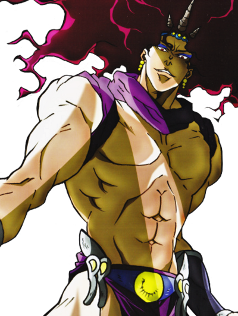
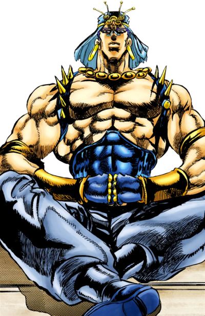

Introduction
Battle Tendency is the second part of Jojo's Bizarre Adventure. Weekly Shonen Jump from November 187 to March 1989. The part was later adapted into a 2012 Anime series.
Plot
The adventure of the next Joestar named Joseph Joestar takes place in the years of 1938-1939. It follows the life changing journey of the grandson of Jonathan Joestar, the battle between ancient being named the Pillar Men, creators of the Stone Mask.
The Pillar Men awakens! The goal to become the ulimate lifeforms, thus becoming invincible equal to none. It is up to Joseph Joestar and his new allies to try and stop their nefarious plan!
The various location that Joseph Joestar and his journey to stop Pillar men are New York City, Mexico, Air Supplena Island, Italy, Venice, Italy, Switzerland, and Rome,Italy.
Joseph Joestar is differs significantly from his grnadfather, as he is known for his cleverness,wit, and unpredictable nature. He is very cocky and brave but the most important is his silly nature!
Major Characters
Joseph Joestar

Caesar Anthonio Zeppeli

Lisa Lisa

Kars
Esidisi
Wamuu
Robert E. O. SpeedWagon

Suzi Q

Smokey Brown

Erina Joestar

Rudol Von Stroheim

My favorite references
Weekly Shonen Jump 1988 Issue #15 March 21, 1988
Fontana del Tritone (Triton Fountain) A: Gian Lorenzo Bernini

Weekly Shonen Jump 1988 Issue #20 April 25, 1988

Antonio's People Mike Morino & Terry Riley Union Square Studio NYC 1983